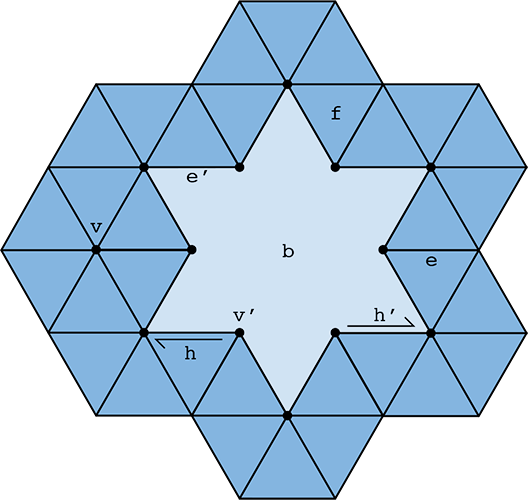

Although the half-edge data structure is designed to support general polygon meshes, you can assume that all meshes used in Assignment will be made of triangles only. You can also assume that the input mesh is manifold, meaning that each vertex is connected to only a single "fan" of triangles. Finally, the input mesh may have boundaries, meaning that an edge is connected to exactly two triangles, unless the edge is on the boundary, in which case it is connected to only one triangle.
Note that edge flips and edge splits must preserve the manifold property of the mesh. If you implement them correctly and map all the pointers to the correct mesh elements, the mesh is guaranteed to be manifold. However, if you implement them incorrectly, the mesh will no longer be manifold. The traversal code that renders the mesh onscreen will likely segfault and crash when following pointers of the half-edge data structure, as you may have experienced when working with linked lists or graph structures in previous classes!
Getting Started on the HalfedgeMesh Class
For Assignment 2, we have already provided a C++ implementation of the half-edge data structure. Although the implementation detail may appear daunting at first, especially if you have little prior experience with C++,, the basic interface you will need for this assignment is quite similar to the abstract description of half-edge data structure given in lecture.
For example, suppose we are given a face and we want to print all of its vertex positions, we would write a function like the following:
void printVertexPositions(FaceCIter f) {
HalfEdgeCIter h = f->halfedge(); // get the first half-edge of the face
do {
VertexCIter v = h->vertex(); // get the vertex of the current half-edge
cout << v->position << endl; // print the vertex position
h = h->next(); // move to the next half-edge around the face
} while (h != f->halfedge()); // keep going until we are back where we were
}
For explanations on low-level details, e.g., why we call a FaceCIter instead of just a Face, please refer to this short article and documentation in halfedgeMesh.h.
Similarly, to print the positions of all neighbouring vertices of a given vertex, we could write a function like the following. Note a vertex neighbours a given vertex if the two vertices are connected by an edge. You may want to draw a simple mesh, e.g., a fan of triangles around a vertex, and follow along the code to understand why it works.
void printNeighbourPositions(VertexCIter v) {
HalfEdgeCIter h = v->halfedge(); // get the outgoing half-edge of the vertex
do {
HalfEdgeCIter h_twin = h->twin(); // get the opposite half-edge
VertexCIter v = h_twin->vertex(); // vertex is the 'source' of the half-edge, so
// h->vertex() is v, whereas h_twin->vertex()
// is the neighboring vertex
cout << v->position << endl; // print the vertex position
h = h_twin->next(); // move to the next outgoing half-edge of the vertex
} while(h != v->halfedge()); // keep going until we are back where we were
}
To iterate over all vertices of a half-edge mesh, we can write a simple loop below:
for (VertexCIter v = mesh.verticesBegin(); v != mesh.verticesEnd(); v++) {
cout << v->position << endl; // do something interesting here
}
Internally, the lists of vertices, edges, faces, and half-edges are stored as linked lists, which allow us to easily add or delete elements to our mesh. For instance, to add a new vertex to the mesh, we can write
VertexIter v = mesh.newVertex();
Likewise, to delete a vertex from the mesh, we can write
mesh.deleteVertex(v);
Note, however, that one should be very, very careful when adding or deleting mesh elements. New mesh elements must be properly linked to the mesh. For instance, this new vertex must point to one of its associated half-edges by writing something like below:
VertexIter v = mesh.newVertex();
v->halfedge() = h;
Likewise, if we delete a mesh element, we must be sure that no existing elements is still pointing to it. The half-edge data structure does not take care of these relationships for you automatically. In fact, that is exactly the point of Assignment -- to get your some practice directly manipulating the half-edge data structure. Being able to perform these low-level manipulations will enable you to write useful and interesting mesh processing code far beyond the basic operations in this assignment.
Mesh Boundary in the HalfedgeMesh Class
The boundary of a mesh, e.g., the ankles and waist of a pair of pants, requires special care in our half-edge implementation. At first glance, the function printNeighborPositions(...) above seems to break if the vertex v is on the boundary, because at some point we will have no twin() half-edge to visit. Fortunately, our implementation has been designed to avoid this kind of problem. In particular, rather than having an actual hole in the mesh, we create a "virtual" boundary face whose edges are all the edges of the boundary loop. This way, we can iterate over boundary elements just like any other mesh element. If we ever need to check whether an element is on the boundary, we have the following methods:
Vertex::isBoundary(); Edge::isBoundary();
Face::isBoundary(); Halfedge::isBoundary();
These methods return true if and only if the element is contained in the domain boundary. Additionally, we store an explicit list of boundary faces, which we can iterate over like any other type of mesh elements:
for (FaceCIter b = mesh.boundariesBegin(); b != mesh.boundariesEnd(); b++) {
// do something interesting in this boundary loop
}
These virtual boundary faces are not stored in the usual face list, i.e., they will not show up when iterating over faces. The figure below should help further explain how the HalfedgeMesh class handles meshes with boundary:

In the figure, dark blue regions represent interior faces, while light blue regions represent the virtual boundary face. The entire virutal boundary face above is considered as a single face, as opposed to being composed of triangles. In other words, the boundary face is a single polygon with 12 edges!
A vertex, edge, or halfedge is considered to be part of the boundary if it is contained entirely in a boundary face. For example, in the figure, vertex , edge and half-edge are all part of the boundary; and their respective isBoundary() method will return true. On the other hand, vertex , edge , and half-edge are not part of the boundary; and their respective isBoundary() method will return false.
To truly understand why printNeighborPositions(...) does not break for a boundary vertex, try walking through the function for the vertex in the figure. What does h->twin() and h->twin()->next() return when h is the half-edge in the figure?
Important Note: The edge degree and face degree of a non-boundary vertex is the same. However, the edge degree and face degree of a boundary vertex is not the same! For example, the vertex above is contained in three edges but only two interior faces. By convention, Vertex::degree() returns the face degree and not the edge degree. For a boundary vertex, we can compute its edge degree by adding 1 to its face degree.
Please refer to documentation in halfedgeMesh.h for further details on the HalfedgeMesh class.
Possible Pitfalls of Iterating Mesh Elements
When dealing with a dynamic data structure like a half-edge mesh, one must think very, very carefully about the order in which mesh elements are processed. It is quite easy to delete an element at one point in the code and try to access it later, often resulting in a crash! For instance, suppose we write a loop like the following:
// iterate over all edges in the mesh
for (EdgeIter e = mesh.edgesBegin(); e != mesh.edgesEnd(); e++) {
if (some condition is met) {
mesh.splitEdge(e);
}
}
The code looks pretty simple, but this routine could very easily crash! Do you see why? The reason is fairly subtle -- we are iterating over edges in the mesh by incrementing the iterator e via e++. However, since the routine HalfedgeMesh::splitEdge() can create and delete mesh elements, it might deallocate this edge before we get to increment this iterator e to the next edge! To be safe, we should instead write our loop like the following:
// iterate over all edges in the mesh
EdgeIter e = mesh.edgesBegin();
while (e != mesh.edgesEnd()) {
// get the next edge NOW!
EdgeIter nextEdge = e;
nextEdge++;
// now, even if splitting the edge deletes it ...
if (some condition is met) {
mesh.splitEdge(e);
}
// ... we still have a valid reference to the next edge
e = nextEdge;
}
Note that this loop is just one example. In general, you should think about which elements might be affected by a local mesh operation when writing your loops. You can make your life easier by making sure that your edge flips and edge splits provide certain guarantees. For instance, if your implementation of HalfedgeMesh::flipEdge(...) guarantees that no edges will be created or destroyed, as it should, then you can safely do edge flips inside a loop without having to worry about these kinds of undesired effects.
Debugging Aid
We have left four debugging functions near the bottom of halfEdgeMesh.h as members of the HalfEdgeMesh class. They are all called check_for(...). Given an iterator to one of the four types of mesh object, the function looks through every object in the mesh and finds the ones that point to the given object. Whenever the function finds a match, it prints a message with the address of the pointing object. This could be useful when you want to confirm that an object is pointed to by the right number of other objects, or that those pointing objects have the expected addresses. This will make more sense once you start implementing Section II of Aassignment 2.
Resources and Notes
In addition to this write-up, you may find these supplemental notes helpful in guiding your implementation. Note that you do not have to handle meshes with boundary, unless you are going for for extra points!
- Correctly Implementing Edge Flip / Split / Collapse
- Edge Operations on an Oriented Triangle Mesh
- Conventions for Meshes with Boundary
Here is another tutorial on the half-edge data structure:
The following paper features a different implementation of half-edge data structure from the one used in Assignment 2, but it discusses some of the software design challenges associated with building a half-edge data structure that is worth reading.